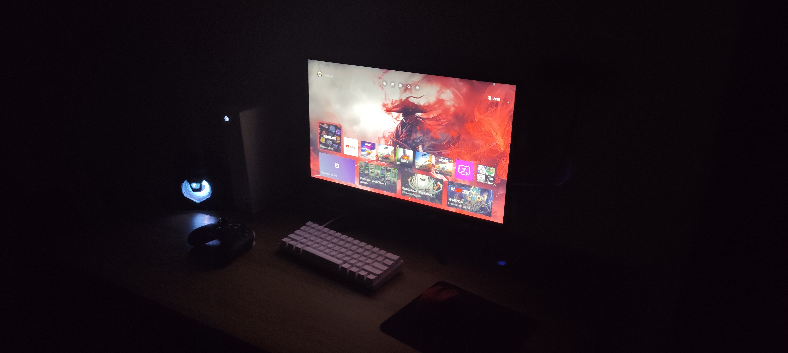

Forza Horizon 6 chegou ao Japão com muito Ray Tracing e reflexos bonitos nos computadores. O game trouxe mais uma onda de boas avaliações para a franquia, mas resta a dúvida: como montar um PC gamer para montar Forza Horizon 6? É isso que nós pretendemos descobrir.

O Voxel reuniu seus melhores pilotos para montar um PC gamer maneiro para rodar Forza Horizon 6 e torcer para o valor não ser o mesmo que de uma Ferrari. Em um contexto de crise de chips, falta de estoques e preços absurdos, montar uma máquina está bem mais caro e exige um orçamento amplo.